Programación en R con RStudio · Aplicaciones en biología y estadística
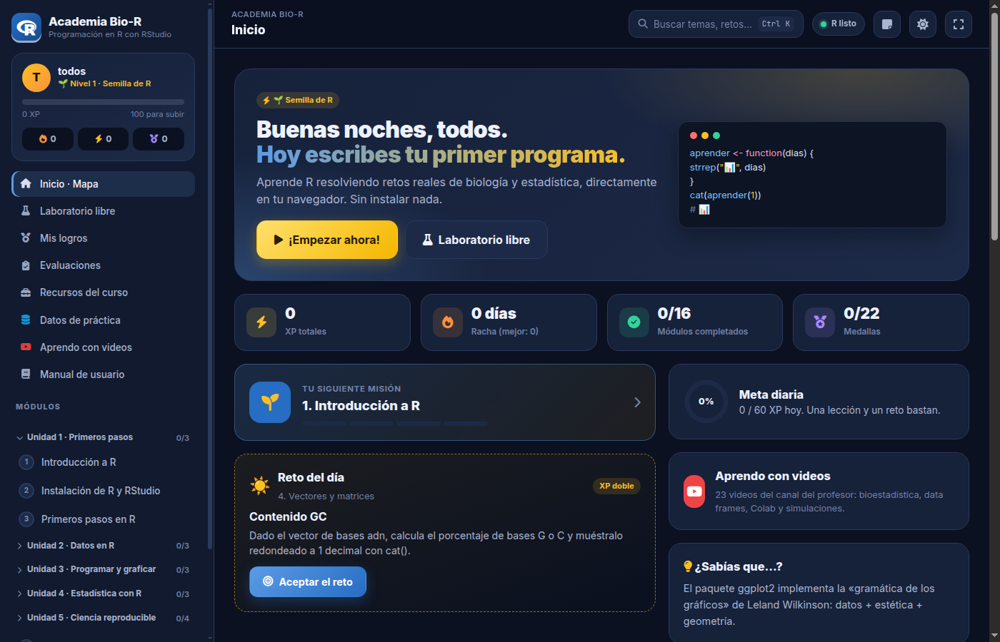
Academia Bio-R es una plataforma para aprender el lenguaje R desde cero, con ejemplos de biología, salud y ecología. Tiene el mismo diseño de la Academia Bio-Python: el curso se recorre como una aventura de 16 módulos en 5 unidades, y cada módulo es una misión de cuatro pasos (lección, laboratorio, retos y quiz) que dan puntos de experiencia (XP), niveles y medallas.
| Unidad | Módulos |
|---|---|
| 1. Primeros pasos | Introducción a R · Instalación de R y RStudio · Primeros pasos en R |
| 2. Datos en R | Vectores y matrices · Listas, factores y data frames · Importar, limpiar y exportar datos |
| 3. Programar y graficar | Programación en R · Paquetes y tidyverse · Gráficos en R |
| 4. Estadística con R | Estadística descriptiva · Pruebas de hipótesis · Correlación y regresión |
| 5. Ciencia reproducible | Bioinformática con R · R Markdown y Quarto · Aplicaciones con Shiny · R en la nube y con IA |
| Bonus (opcional) | Actividades Extras (10 videos sobre biología computacional, el futuro de la programación, pensamiento crítico e IA) · Proyecto final: análisis de un experimento · Desafíos de programación bio |
Lo más importante: el laboratorio ejecuta R 4.5 real dentro del navegador (tecnología WebR). No hay que instalar nada para practicar, y todo lo aprendido funciona igual en RStudio.
Tu progreso es tuyo: XP, medallas, código y notas se guardan por usuario en el navegador. Si cambias de computador o de navegador, empiezas de cero en ese equipo.
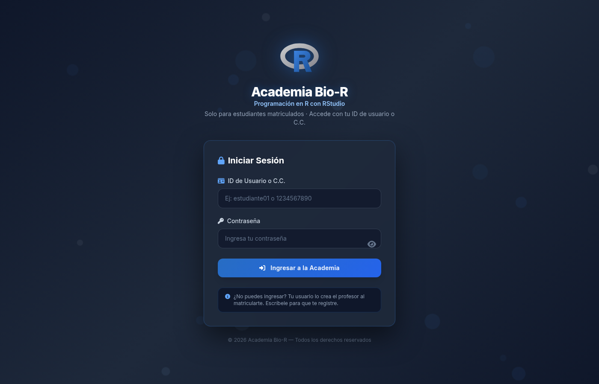
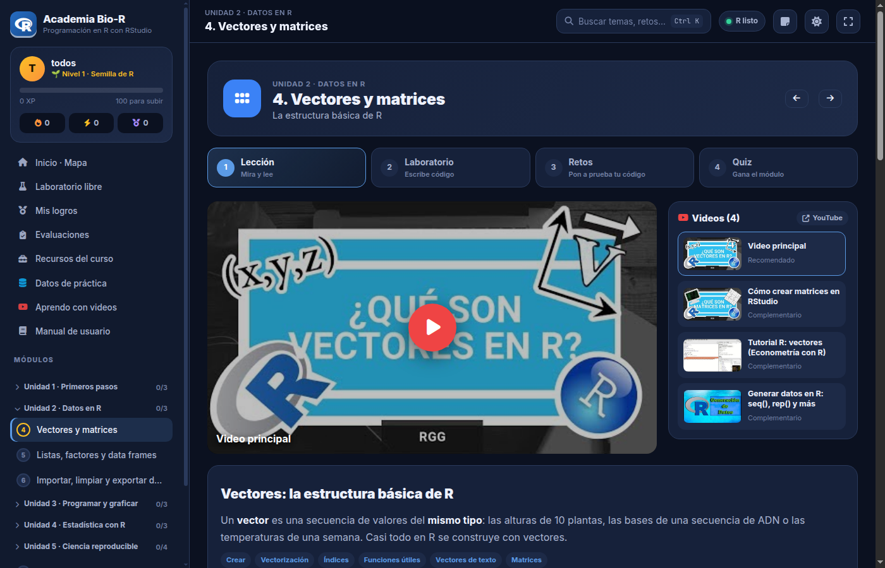
| Zona | Qué contiene |
|---|---|
| Tarjeta del jugador | Tu nombre, nivel, barra de XP, racha de días (🔥), XP de hoy (⚡) y medallas. |
| Secciones | Inicio · Mapa, Laboratorio libre, Mis logros, Evaluaciones, Recursos del curso, Datos de práctica, Aprendo con videos y Manual de usuario. |
| Módulos | Las 5 unidades (se despliegan con un clic) y el bonus. El círculo de cada módulo muestra su estado: gris (nuevo), amarillo (en curso) o verde con ✓ (completado). |
| Barra superior | Dónde estás, el buscador (Ctrl + K), el estado de R (punto verde = «R listo»), notas, tema claro/oscuro y pantalla completa. |
El inicio saluda por tu nombre y muestra tus estadísticas, la siguiente misión (el módulo que te toca), el reto del día (vale el doble de XP), la meta diaria de 60 XP, el acceso a «Aprendo con videos» y un dato curioso de R.
Más abajo está el mapa de la aventura: una tarjeta por módulo con cuatro barritas que se ponen verdes al completar cada paso. El módulo marcado como SIGUIENTE es el recomendado.
Cada módulo tiene cuatro pasos numerados y, en algunos, un paso extra En RStudio. Los botones con flechas de la cabecera llevan al módulo anterior o siguiente.
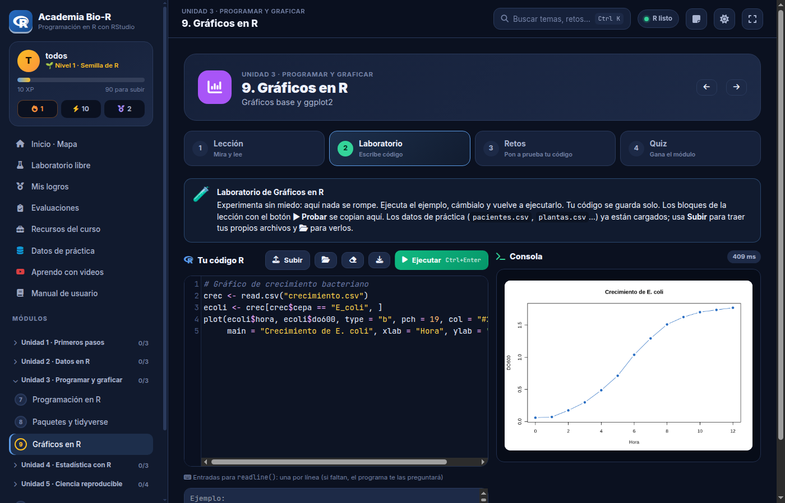
<-; Ctrl + Shift + M escribe %>%; Ctrl + Shift + C comenta líneas.plot(), hist(), boxplot() y ggplot2 aparecen en la consola.library(ggplot2), library(dplyr), etc.; se instalan solos la primera vez.write.csv())..R para abrirlo en RStudio.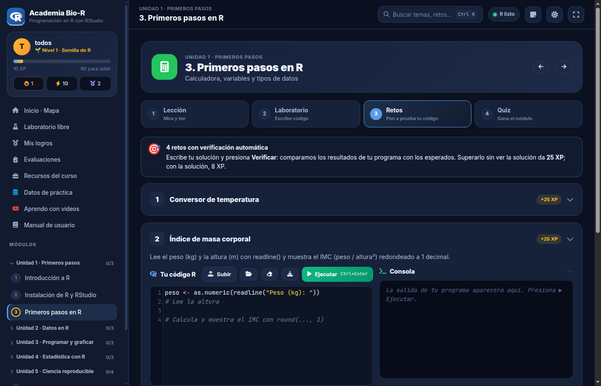
Algunos retos se hacen en RStudio (instalar R, Bioconductor, Shiny, R Markdown, Colab): al verificarlos aparece el botón Ya lo hice.
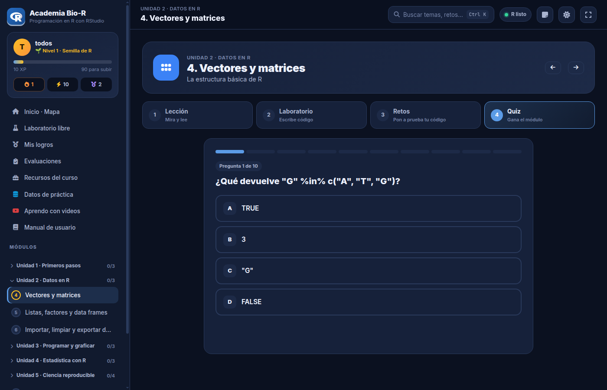
Diez preguntas, una a la vez, con respuesta inmediata y combos por aciertos seguidos. Las preguntas y opciones cambian de orden en cada intento. Con 70 % o más el módulo queda completado. Se guarda tu mejor resultado.
En los módulos que lo tienen, este paso explica cómo hacer lo mismo en RStudio, Posit Cloud o Google Colab (instalación, proyectos, paquetes, informes, aplicaciones Shiny).
| Acción | XP |
|---|---|
| Lección leída | 15 |
| Primer programa del módulo | 10 |
| Reto superado (con la solución) | 25 (8) |
| Reto del día | doble |
| Respuesta correcta nueva | 8 |
| Módulo completado | 100 |
Hay 11 niveles, de «Semilla de R» a «Gran Maestro useR», y 22 medallas (primer programa, cazabugs, graficador, racha de 7 días, quiz perfecto…). En Mis logros se ven todas; al completar los 16 módulos se activa el diploma imprimible.
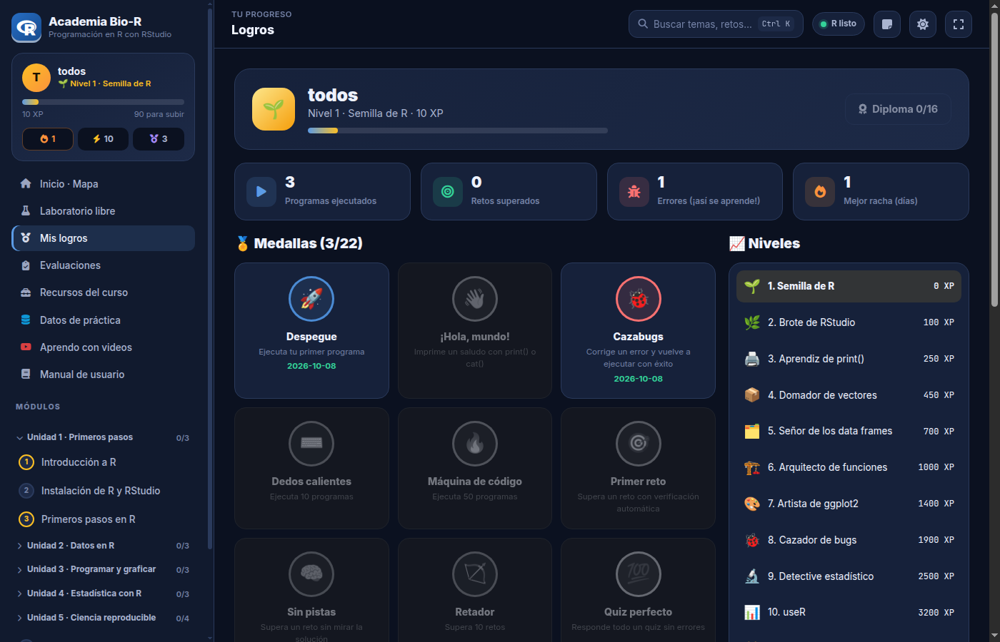
El Laboratorio libre sirve para practicar sin un módulo: tiene experimentos listos (complemento de ADN, transcripción, IMC, curvas de crecimiento, modelo logístico, temperaturas, flores con ggplot2 y un juego de adivinar).
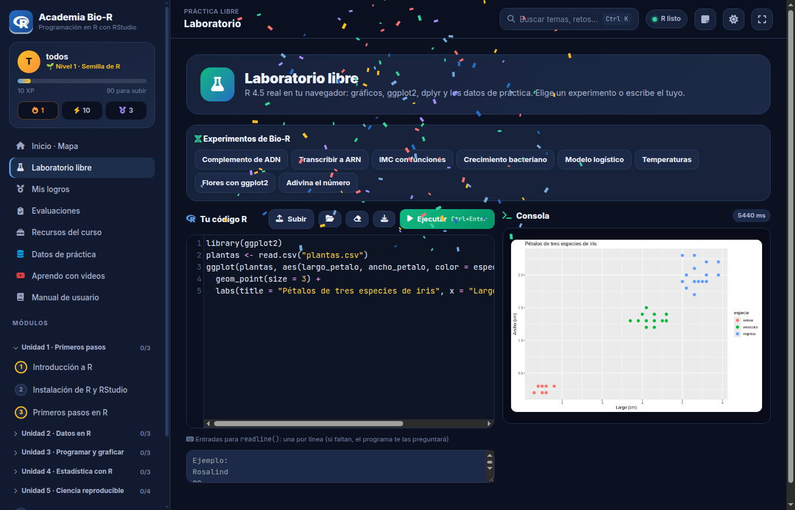
Datos de práctica (en la barra lateral) describe las siete bases ya cargadas en el R de la academia y permite descargarlas para RStudio: pacientes.csv, plantas.csv, crecimiento.csv, fertilizante.csv, genes.csv, clima.csv y estudiantes.csv. Se leen con read.csv("pacientes.csv").
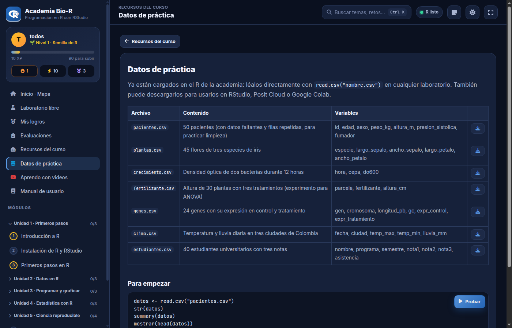
Reúne 23 videos del canal de YouTube del profesor John Jairo Estrada, verificados uno a uno, en siete temas: bioestadística con datos no agrupados y agrupados, diagrama de caja, de la unidad de observación al data frame, de Excel a CSV, Google Colab en equipo y modelos y simulaciones en biología. Cada tema tiene botones «Ver en la aplicación» que llevan a los módulos relacionados; esos videos también aparecen en la lección de esos módulos.
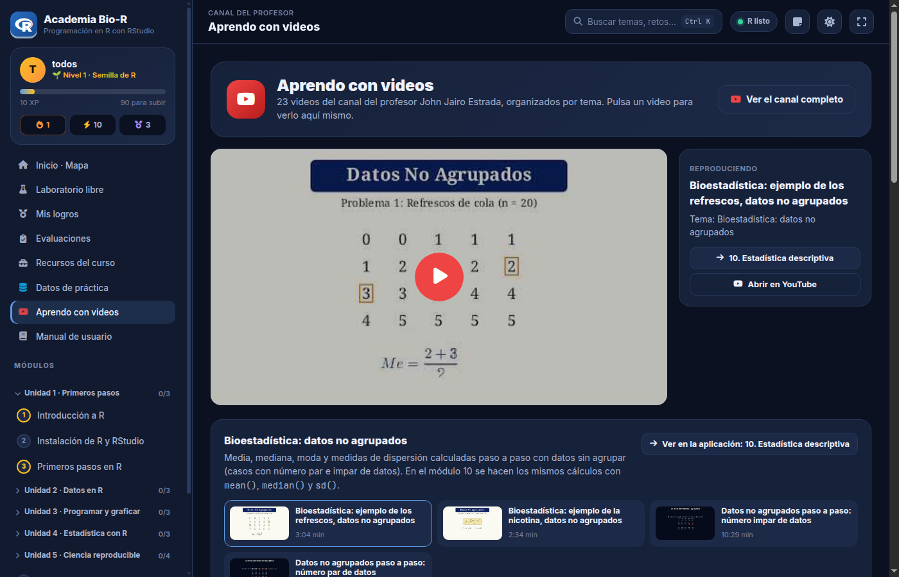
El canal aún no tiene videos de programación en R: los módulos sin videos del canal se listan al final de la sección. Sus lecciones usan videos en español de otros autores, verificados.
Evaluaciones muestra las autoevaluaciones (quizzes) de cada módulo con tu mejor resultado, y los quizzes y parciales oficiales del profesor cuando los publique (cada uno con enlace y código QR para el celular).
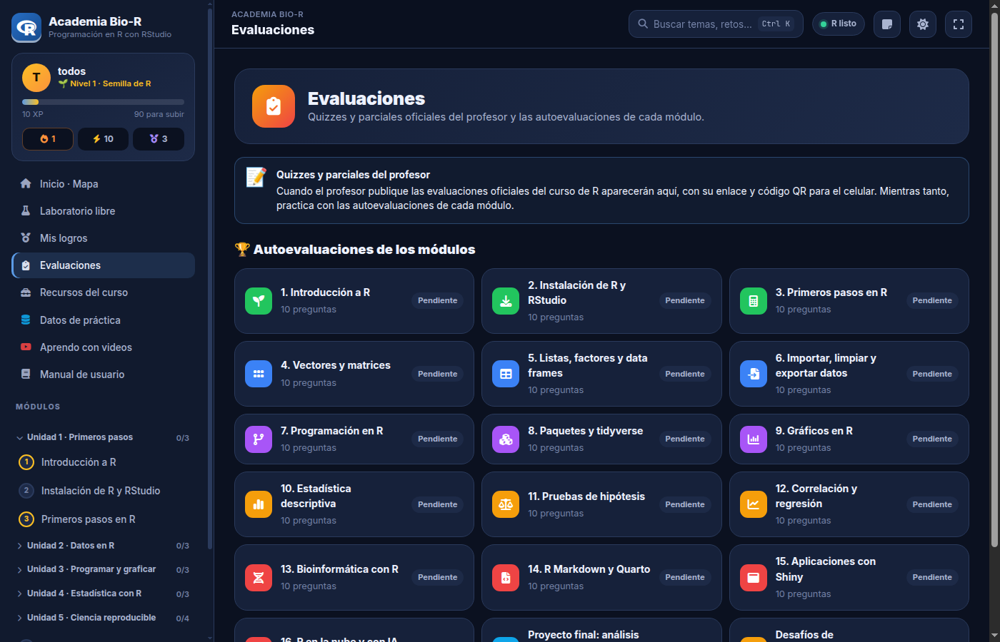
Recursos del curso: este manual, la chuleta de R (las funciones más usadas en una página), los atajos de RStudio, los datos de práctica, páginas recomendadas (libros gratuitos en español, CRAN, Posit, Bioconductor, cheatsheets) y otras aplicaciones del profesor.
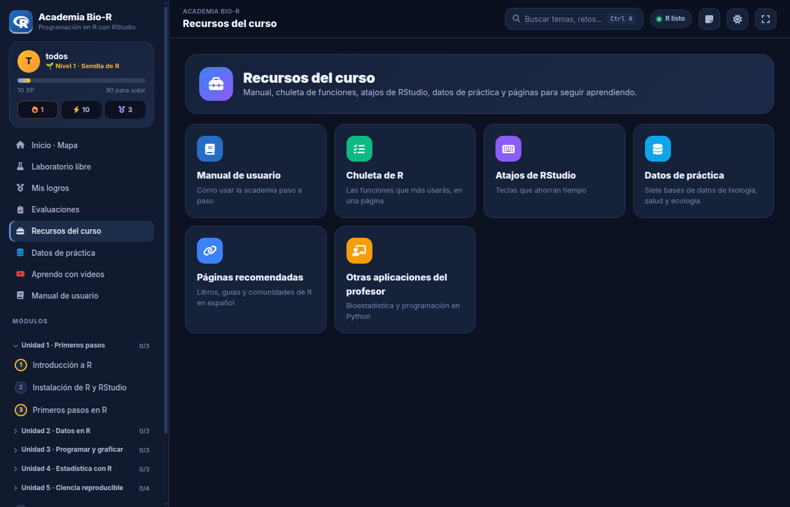
Pulsa Buscar o Ctrl + K y escribe una palabra («boxplot», «data frame», «t.test»): aparecen módulos, retos, quizzes, recursos y videos. Muévete con las flechas y entra con Enter.
El botón de notas guarda apuntes por módulo; Descargar todas las baja en un archivo Markdown.
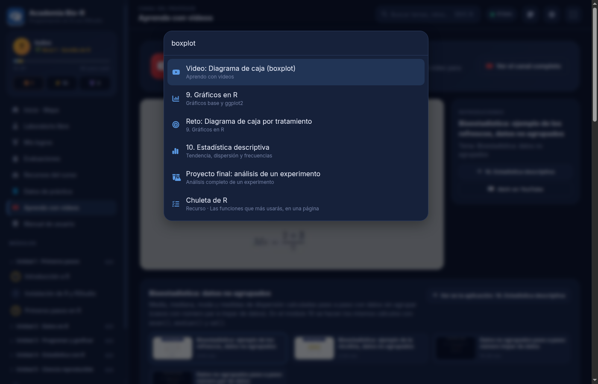
Cuando tu programa falla, la consola marca la línea y el Profe R explica el error en español.
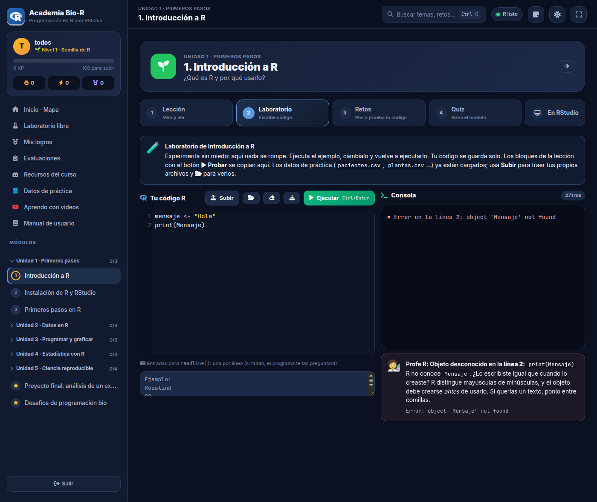
| Mensaje de R | Qué significa | Cómo arreglarlo |
|---|---|---|
object 'x' not found | El objeto no existe | Revisa mayúsculas y que se haya creado antes; los textos van entre comillas. |
could not find function | Función desconocida | Revisa el nombre o carga el paquete con library(). |
unexpected symbol / ')' / end of input | Error de escritura | Falta o sobra una coma, paréntesis, llave o comilla. |
non-numeric argument to binary operator | Texto donde iba un número | Convierte con as.numeric() (lo que da readline() es texto). |
missing value where TRUE/FALSE needed | Condición con NA | Usa is.na() o na.rm = TRUE. |
the condition has length > 1 | if con un vector | Usa ifelse(), any() o all(). |
undefined columns selected | Columna inexistente | Revisa names(datos). |
cannot open file | Archivo no encontrado | Revisa el nombre o súbelo con Subir. |
there is no package called | Paquete no disponible en el navegador | Practícalo en RStudio o Colab. |
| «¿Bucle infinito?» | El programa tardó más de 12 s | Revisa la condición del while. |
La academia se adapta a pantallas pequeñas: el menú se abre con el botón ☰ de la esquina superior, los pasos del módulo se desplazan horizontalmente y el laboratorio muestra el editor encima de la consola.
Para escribir código largo es más cómodo un computador, pero las lecciones, los videos y los quizzes funcionan bien en el celular.
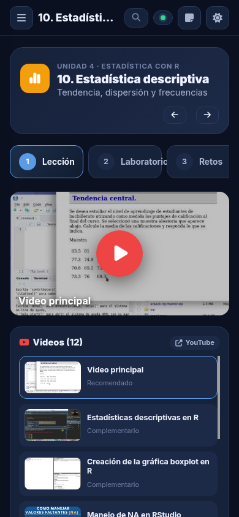
| Problema | Solución |
|---|---|
| «ID/C.C. o contraseña incorrectos» | Revisa mayúsculas y espacios. Si estás matriculado y no puedes entrar, pide al profesor que revise tu usuario. |
| El indicador dice «R sin conexión» | La primera carga de R necesita internet. Revisa la conexión y recarga la página. |
| La primera ejecución tarda | Es normal: R se descarga una vez por sesión (unos 10 s). Un paquete nuevo tarda unos segundos más. |
| El video se abre en YouTube en vez de verse en la academia | La academia está abierta como archivo del computador (file://): YouTube no permite videos incrustados así (Error 153). Ábrela desde su dirección de internet (GitHub Pages) y los videos se verán dentro. |
| Mi archivo subido desapareció | Los archivos subidos se borran al recargar la página. Vuelve a subirlos. |
| Un paquete no se instala | Algunos (Bioconductor, shiny en servidor) no funcionan en el navegador: usa RStudio, Posit Cloud o Colab. |
| El reto dice «¡Casi! Faltan resultados» | Abre «Ver la salida esperada» y compara: deben aparecer los mismos números junto a su etiqueta y el resultado final. |
| Perdí mi progreso | El progreso se guarda en el navegador de cada equipo. Usa siempre el mismo navegador y no borres los datos del sitio. |
| El manual no abre en ventana | Permite las ventanas emergentes o usa Descargar PDF. |
_PRESET_USERS de js/auth.js y publique el cambio (detalles en _seguridadBasica.md).bior_…, br_…): no se mezcla con la Academia Bio-Python aunque las dos estén en el mismo sitio de GitHub Pages.La academia puede enviar a formularios de Google el ingreso, la salida y la duración de cada sesión, y las actividades (lecciones, retos, notas de quizzes). Está desactivado: para activarlo ejecute docs/crear_formularios.gs en script.google.com y pegue la configuración que imprime en js/registro-config.js.
js/modulos/unidadN.js: lección (content), retos (exercises) y quiz (quiz). Los bloques R`...` reciben el botón ▶ Probar.EVALUACIONES de js/recursos.js (título, enlace, ícono y color; el código QR se genera solo).js/videos.js.